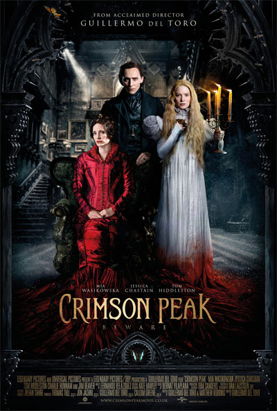

부정기적으로 생각날때마다 써보는
최근 본 영화 시리즈(?) 입니다 ^^

크림슨피크
화면예쁘다
두여자가 드레스 흐날리녀 칼부림하는데
대따 이쁘다//
히들이는 제2의 휴그랜트가 될셈인가
참 미워할수없는 찌질이 내지는 상늠 캐릭터 ^^;;;
검은사제들
강동원 이쁘다;ㅂ;
런던 korean film festival에서
실제로 본적있는데 (눈앞으로 지나감)
실물보다는 화면에서 더 이뻐보이는 분 같습니다
오컬트/엑소시즘 장르의 영화를 좋아하는지라
매우 기뻐하면서 봤습니다
장소선정도 맘에들어요 제일 정신없고 시끄러운
명동 한 구석의 어두운 곳이나리
.....그리고 강동원이 이쁘더군욤 ;ㅂ;
길어 날씬해 그리고 이뻐 ;ㅂ;
하트 오브 더 씨
아무런 정보없이 가서 봤는데
크리스햄스워스 가 나오는 영화가 이거였군요
영화내용은 몰라도 인터넷은 열심히 하는 진정한 네티즌(...)이라
웹상에 체중감량 엄청해서 노숙자 꼴로 찍은 사진을 보구
어이구 또 무슨 험한 영화를 찍길래 저렇게 살을 뺐지 싶었는데
그게 이거였어 ㅋㅋ
잼나게 봤습니다 :)
맥베스
상영관도 적고 시간대도 넘 적어서
시간 맞추느라 힘들었어요;;
11월 12월 거의 제정신이 아닌 상태로 보내서 ㅡㅡ;
굉장히 다른 의미로 지금 크리스마스를 기다리고있는게
일정 모두 마무리 되면
크리스마스날 전 반반무많이 먹고 바로 딥슬립 할겁니다 ㅜㅜ
쉴거에요 ㅜㅜ ㅜㅜ
이런 메롱한 상태에서 보러 간 영화인데
넘흐 머시써요 ;ㅂ;
같이한 일행은 올해 베스트로 이걸 꼽더군요
내부자들
재미있다는 소리가 들려서 보고 왔습니다
뻔하고 다 알지만 못막는 사실들
영화에서나마 잠깐 통쾌함을 느끼게 해주네욤
.....스타워즈 보러가야하는데
이거땜에 1,2,3편을 몰아봤는데 ㅋㅋㅋㅋ
끗!